前言
最近无意间刷到一些关于笔记的视频，让我这个高三以来已经多年不怎么写笔记的人一下来了兴趣，在好奇心的驱使下跟着视频内容进行操作，但中途还是遇到了一些奇奇怪怪的问题，好在最后都解决了。最后发现确实不用怎么写笔记了，以后应该是敲笔记才对吧。
记忆的过程
-
知识被大脑记住的过程 知识被大脑记住的过程是一个复杂的生理和心理过程，主要分为三个阶段：
- 编码阶段： 大脑将信息转换为神经信号，并将其存储在短期记忆中。
- 巩固阶段： 短期记忆中的信息通过重复或意义编码被转移到长期记忆中。
- 检索阶段： 当需要回忆信息时，大脑会从长期记忆中检索相关信息。
来源
-
💡 影响记忆的关键因素 影响记忆的关键因素包括：
- 注意： 对信息进行充分的注意是记忆的前提。
- 意义编码： 将信息与已有的知识联系起来，使其更有意义，更容易记忆。
- 重复： 重复信息可以加强记忆痕迹。
- 情感： 情感强烈的信息更容易被记住。
来源
-
📚 学习的终极奥秘 学习的终极奥秘在于如何将知识转化为长期记忆。一些有效的学习方法包括：
- 检索练习： 通过回忆来巩固记忆。
- 间隔重复： 在不同的时间间隔内重复学习信息。
- 多样化练习： 使用不同的学习方式来加强记忆。
来源
从上面的内容中我们可以发现重复的力量是相当强大的，其实也就是复习。那么有没有一种笔记方式，能让我们快速获取笔记内容并且能够将重要内容进行有效的重复呢？而这个问题也正是本文所探讨的核心，我们应该如何实现
自己动手丰衣足食？
从纸质笔记到电子笔记，各有优势利弊。在某些情况下，人们仍然会选择使用纸质笔记。然而，目前电子笔记的使用频率越来越高，越来越多的人开始依赖于电子笔记。但是，随着电子笔记的普及，一些问题也逐渐显现出来，例如越来越多的笔记软件采用付费模式，以及充斥着大量无用内容的现象。在商业化的推动下，一些厂商或许已经忘记了最初的用户需求。理想中的笔记软件应该具备一些基本特点，比如能够快速获取基本的笔记内容、页面简洁明了、笔记管理和使用方法简单易懂、能够实现笔记之间的关联性，以及能够帮助用户提取和复习知识重点。而目前市面上的免费的笔记软件很难同时满足以上的需求，好在，自己动手便可以丰衣足食
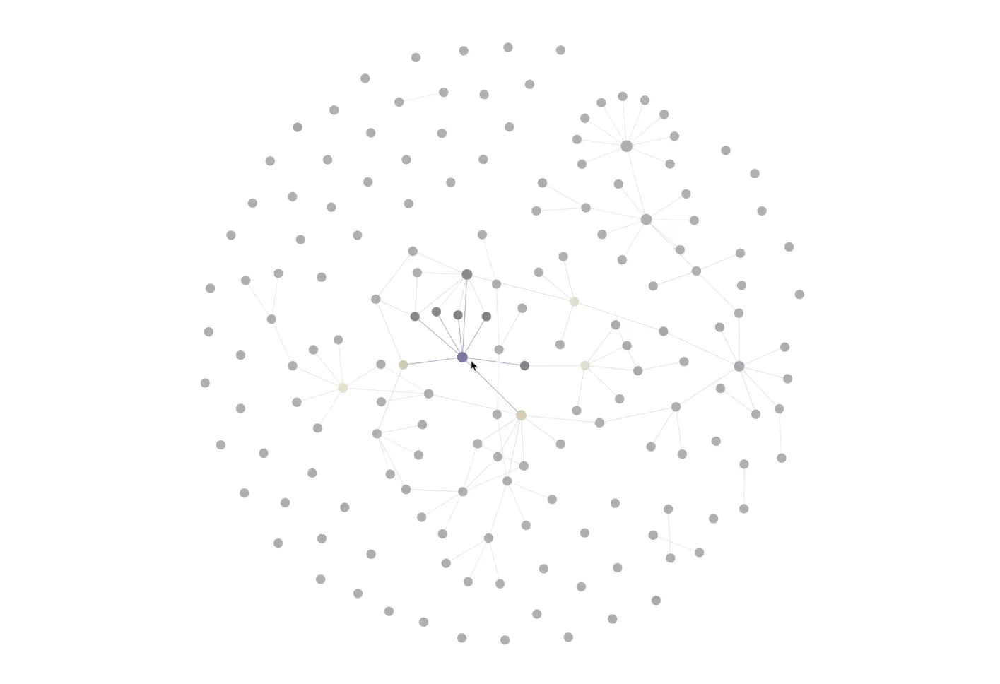
Obisidian双向链接
软件介绍
Obsidian
什么是Obsidian
Obsidian，是使用Markdown语法的闭源笔记软件。用户可以在笔记间建立双向链接，并且可以神经网络图的形式将这些链接可视化。该笔记旨在帮助用户以一种灵活的、非线性的方式来组织和构架他们的想法和知识。
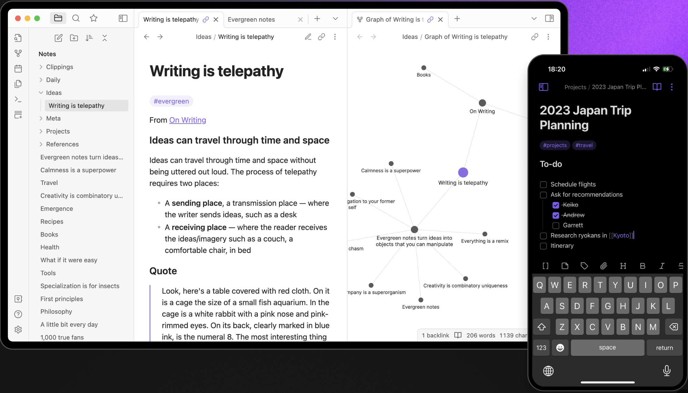
Obsidian的优势
-
双链笔记：Obsidian 的双链笔记功能使得笔记之间可以相互关联，这在传统笔记软件中并不常见。这种双向链接可以帮助用户更好地组织和理解复杂的信息关系。
-
Markdown 支持：Obsidian 支持 Markdown 语法，这使得用户可以使用简单的标记语言来编辑和格式化笔记，而不必依赖复杂的编辑界面。
-
本地优先：Obsidian 采取本地优先的存储方式，用户的笔记数据存储在本地设备上，而不是云端。这样可以确保数据的安全性和隐私性。
-
插件生态：Obsidian 具有丰富的插件生态系统，用户可以根据自己的需求选择安装各种插件来扩展软件的功能。
-
自定义性：Obsidian 提供了丰富的自定义选项，用户可以根据自己的喜好调整界面、主题和其他设置。
开始安装
1.进入Obsidian官网,下滑找到
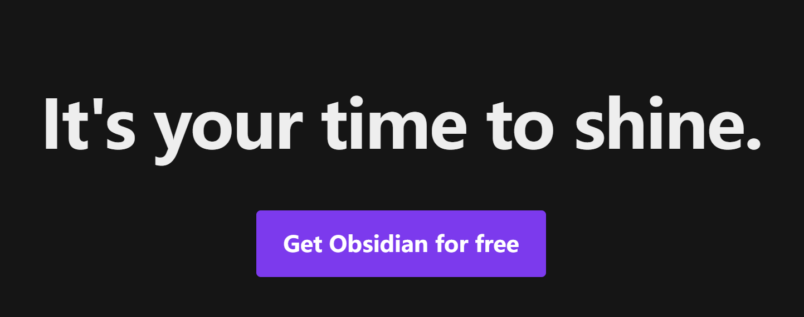
点击进入后下载自己系统对应的版本即可。
Omnivore(Web Extension)
介绍
Omnivore 是一款免费、开源、适合认真读者阅读的应用程序。
不受干扰。 注重隐私。 开源。 专为知识工作者和终身学习者而设计。
保存文章、新闻通讯和文档并稍后阅读——专注且无干扰。 添加注释和亮点。 按照您想要的方式整理您的阅读列表并在所有设备上同步。
开始安装
进入浏览器扩展商店，这里以谷歌为例。进入后直接搜索Omnivore，点击下载。下载完成后会自动弹出Omnivore的界面，在此界面上注册账号并登录，方便后续步骤。
Anki
About Anki
Anki 是一个让记忆变得容易的程序。因为它比传统的学习方法效率高得多，所以您可以大大减少学习时间，也可以大大增加学习量。
任何在日常生活中需要记住事情的人都可以从 Anki 中受益。由于它与内容无关，并且支持图像、音频、视频和科学标记（通过 LaTeX），因此可能性是无穷无尽的。
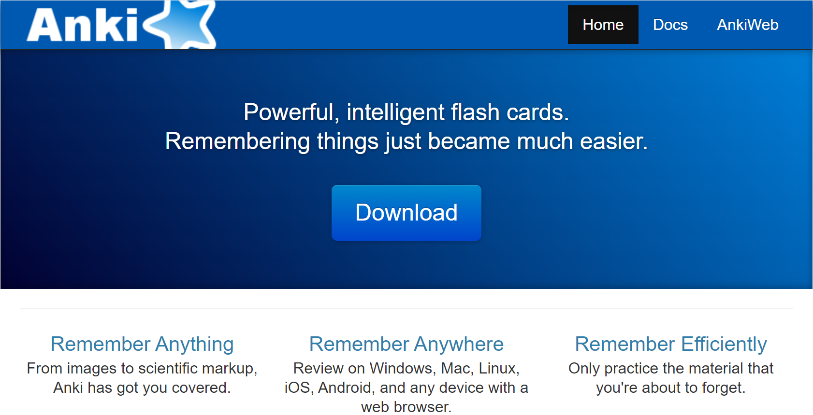
Features
-
Synchronization: 使用免费的AnkiWeb同步服务，让您的卡在多个设备之间保持同步。
-
Flexibility: 从卡片布局到复习时间，Anki 有丰富的选项供您自定义。
-
Media-Rich: 在卡片上嵌入音频剪辑、图像、视频和科学标记，并精确控制其显示方式。
-
Optimized: Anki: 将毫无问题地处理 100,000+ 张牌的套牌。
-
Fully Extensible: 有大量可用的附加组件。
-
Open Source: 由于代码和存储格式是开放的，因此您的重要数据是安全的。
Start
进入Anki官网,点击Download跳转到系统选择页面，选择对应的 Qt6 版本下载即可。安装打开之后继续注册账号并登录。
开始你的第一篇笔记
一些前置设置
在Obsidian安装插件
Omnivore
1.进入Obsidian后点击左侧边栏最下方的齿轮进入设置页面 >> 第三方插件 >> 社区插件市场 >> 搜索 Omnivore >> 安装
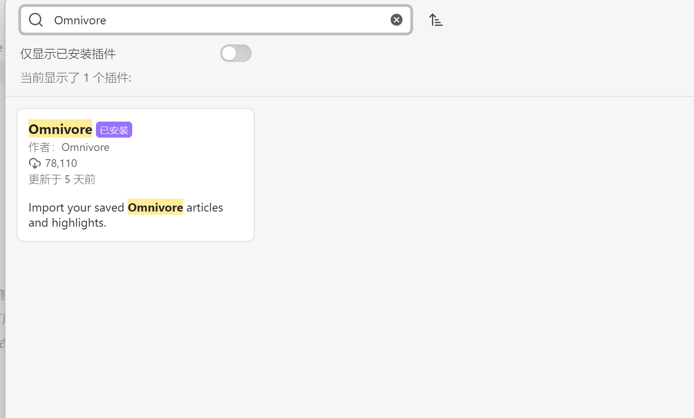
2.进入浏览器打开Omnivore >> 点击左下角账号 >> API Keys >> 复制当前浏览器的Key
3.返回Obsidian >> 继续打开设置 >> 在最下方 第三方插件 中找到Omnivore >> 在第一行 API Keys 中粘贴复制的Key
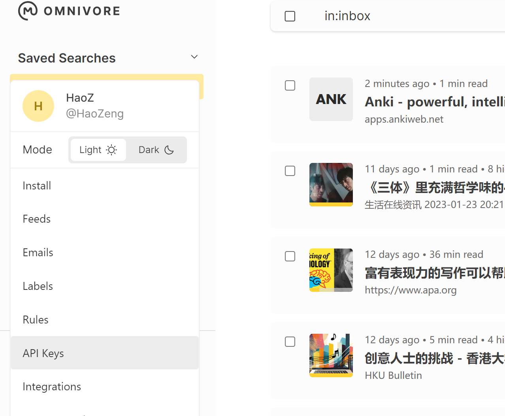
Export to Anki
1.同上方操作1，进入插件市场后搜索 Export to Anki 并安装
2.在插件浏览页面下滑找到 Obsidian plugin users 复制下方的代码并保存，后面配置Anki时会用到
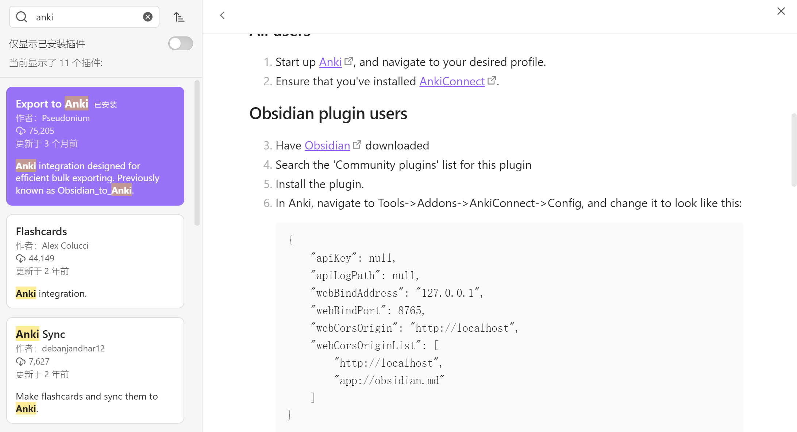
配置Anki
1.打开Anki并登录账号 >> 选择上方 工具 >> 插件 >> 获取插件
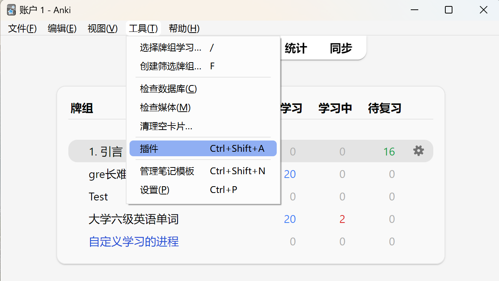
2.输入代码 2055492159 安装插件，安装成功后在 插件 双击安装后的插件。弹出对话框后将 Export to Anki 复制的代码替换掉对话框中的默认代码
获取笔记
1.当浏览器成功安装Omnivore拓展之后右上角会出现一个黄色的小图标
2.在浏览器打开需要记录笔记的网站，点击Omnivore图标后会自动将网页内容存入inbox
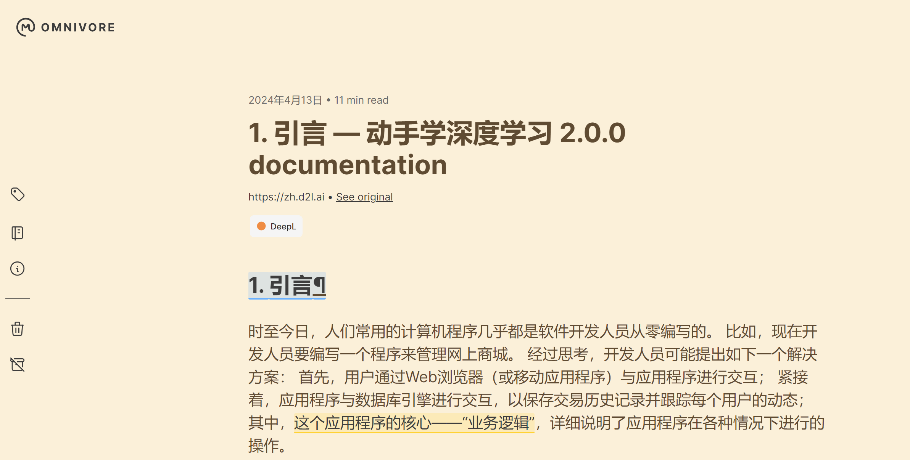
3.在inbox找到对应文章，在阅读时对重要内容进行高亮标记和注释，插件会自动将文章中高亮和注释内容同步到Obsidian中
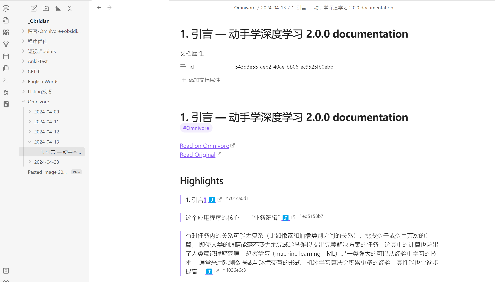
4.当一篇文章阅读完之后，可以将其存入 Archive 防止遗失，同时也可以为文章设置不同的标签来提高管理效率
如何记笔记
找个帮手——Monica
一款实用的AI助手，可以在阅读时提供信息帮助并提高笔记的效率和质量，通过浏览器插件市场下载。
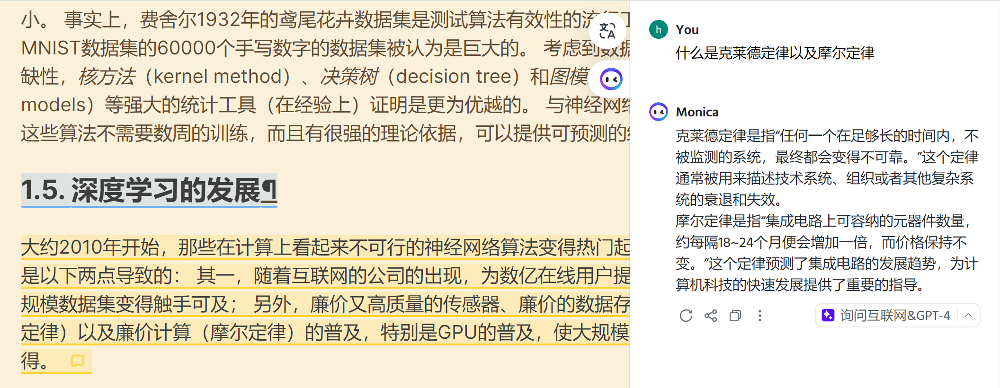
善用高亮
在添加笔记前，尽量将文章中每段章节的标题用不同颜色高亮进行标记以保证文章的完整性和阅读的流畅性。
让笔记更进一步——生成记忆卡片
在Obsidian中设置卡片规则
1.进入Obsidian设置页面，在 第三方插件 中选择 Obsidian_to_Anki
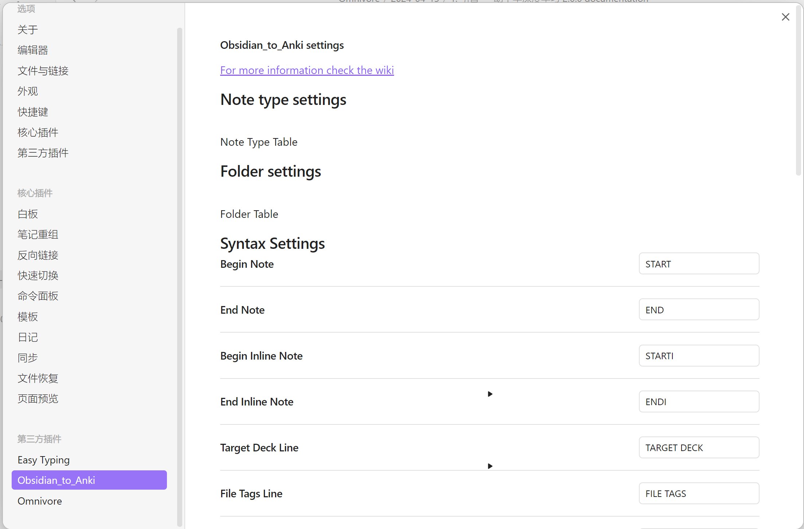
2.点击图片中的 Note Type Table 插件会自动获取Anki本地的笔记模板，只需要在 Custom Regexp 处填写对应的正则表达式即可
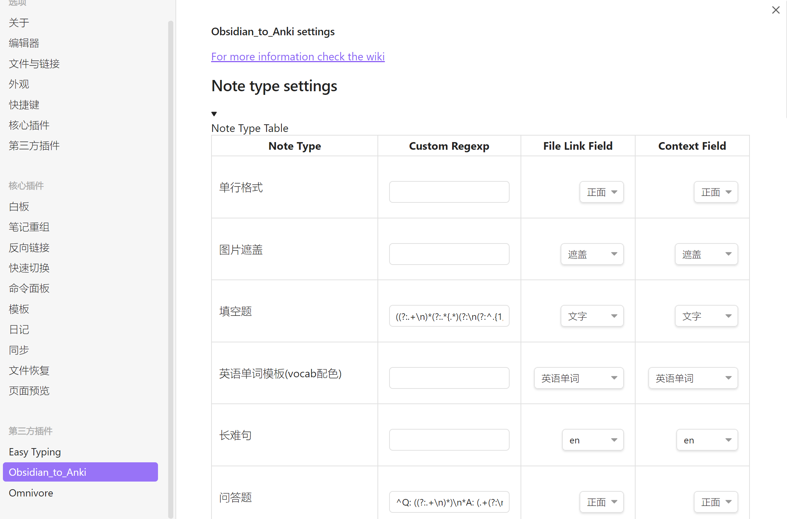
3.前往插件的GitHub主页，使用下方提供了正则表达式页面的链接Obsidian_to_Anki/wiki/Regex，在Regex页面可以获取不同形式的正则表达式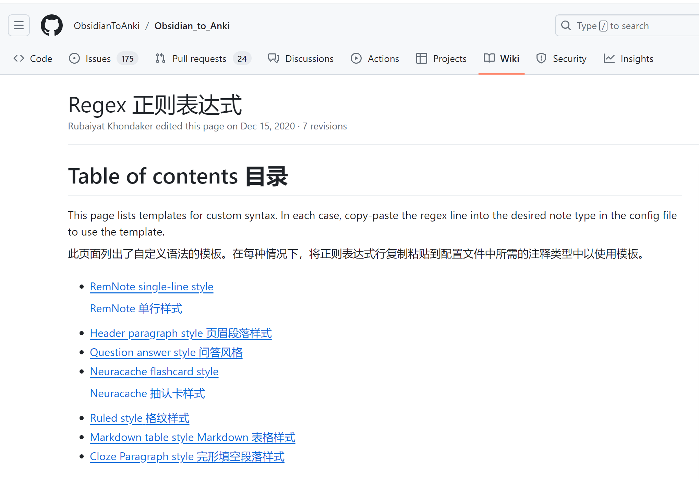
4.这里以 Question answer style(问答风格) 的配置为例：首先复制下图中 Regex line 处的正则表达式：
1 | ^Q: ((?:.+\n)*)\n*A: (.+(?:\n(?:^.{1,3}$|^.{4}(?<!<!--).*))*) |
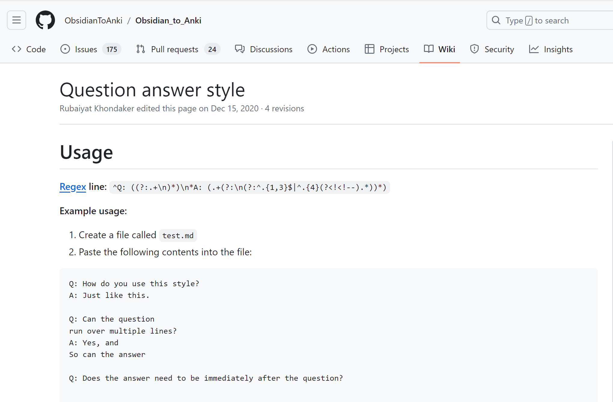
返回Obsidian插件并进入 Note Type Table ,在 Custom Regexp 中的问答题栏处粘贴复制的表达式即可
5.为了方便日常使用，这里一并提供另外两种常用的正则表达式，分别在粘贴在 填空题 和 标签格式 处：
1 | 1.Cloze Paragraph style |
开始制作卡片
1.在Obsidian中自动生成卡片的三种方法，如下图：
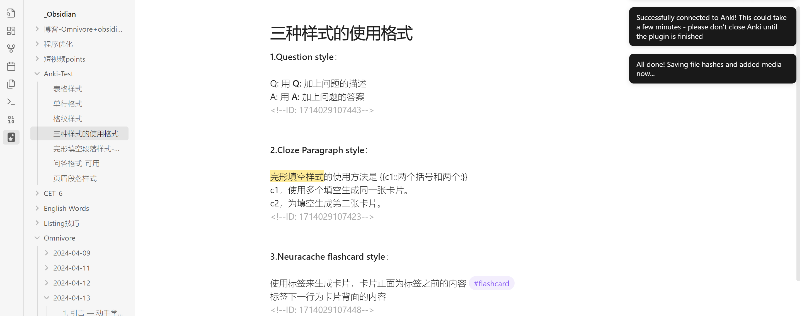
制作好后记得点击左侧最下方的卡片进行生成，注意，生成时需打开Anki 在Anki中查看效果：
完形填空：
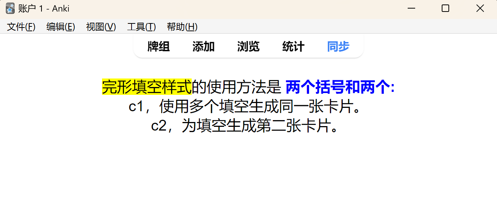
问答：
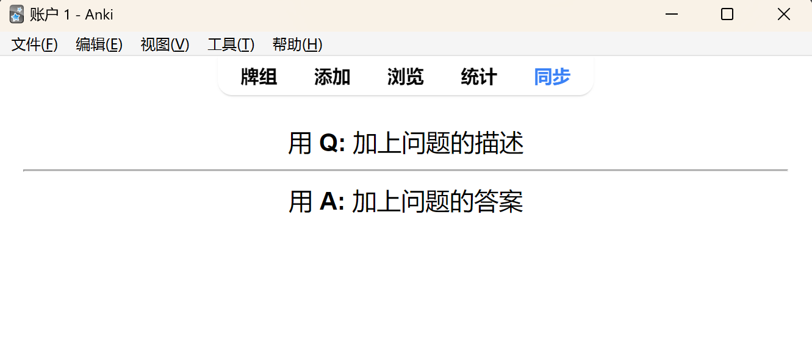
卡片：
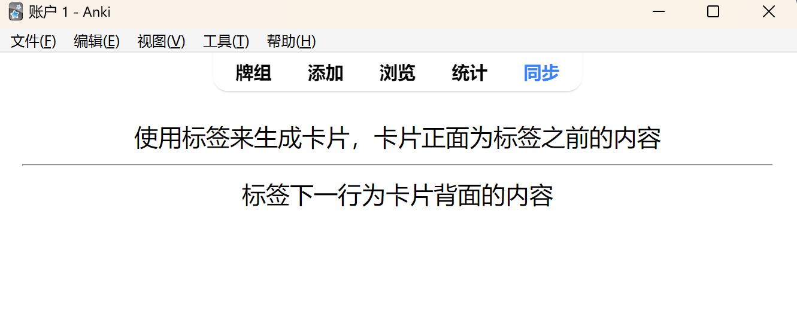
2.在插件 Default 处可进行一些基础设计， Deck 可以更改卡片在Anki中的生成位置，注意无需在Anki中先创建文件名
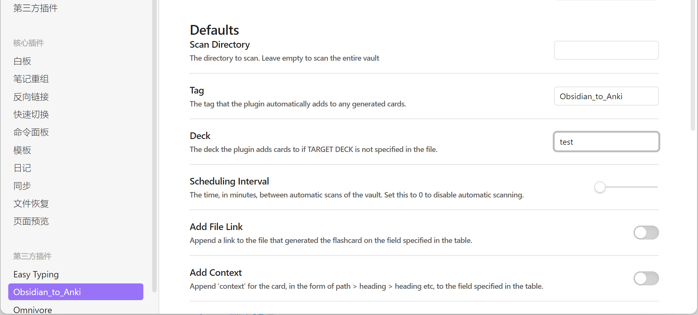
后记
开启新的笔记旅途
效果预览
- 在Anki中对卡片进行进一步修改和完成，例如添加音频或图片等
- 对卡片进行分组，寻找适合自己的记忆规划
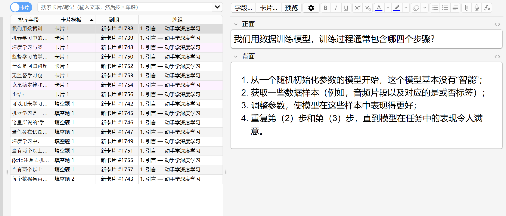 - 抖音刷累了去刷一会Anki😂
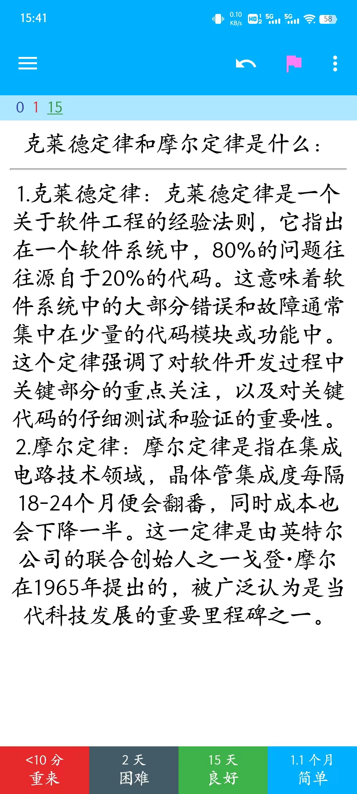
注意事项
- 目前Anki，Omnivore，Obsidian可在谷歌应用市场下载对应的手机端，前两者均可登录账号进行免费的多端同步，Obsidian有付费同步方案，但目前免费同步方法比较麻烦，有需要可以尝试手动同步。
- 遇到有些网站无法打开或扩展无法使用的情况大概率时需要挂T子。
- Anki详细使用手册
- Obsidian参考文档
- Omnivore指南
总结
如《天路历程》中真理剑客所说：“我的剑留给能够挥舞它的人”。这篇文章所展示的各种方法也只是冰山一角，基于Obsidian强大的第三方插件以及Anki的开源优势，未来或许每个人都有机会拥有属于自己的一套个性化的笔记体系。
如果您喜欢此博客或发现它对您有用，则欢迎对此发表评论。 也欢迎您共享此博客，以便更多人可以参与。 如果博客中使用的图像侵犯了您的版权，请与作者联系以将其删除。 谢谢 ！